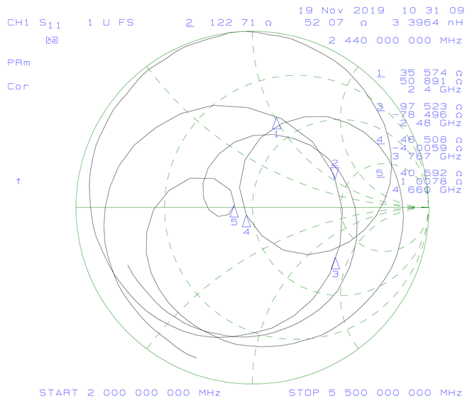
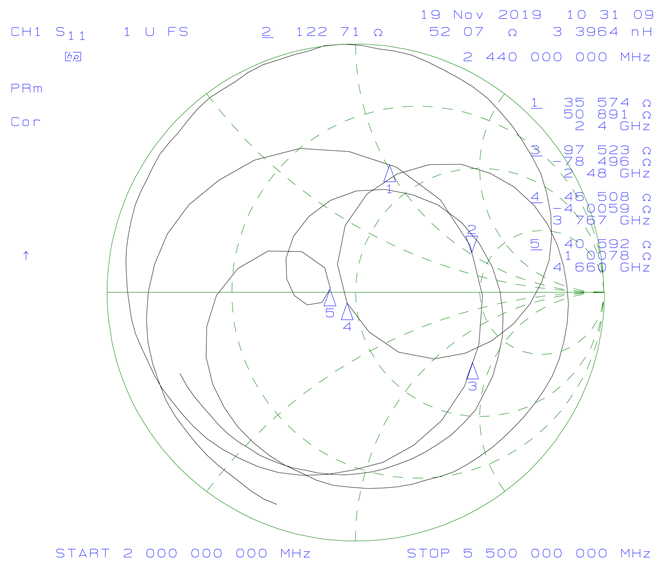
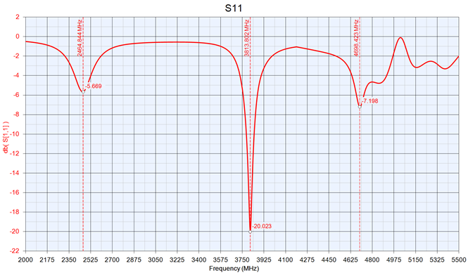
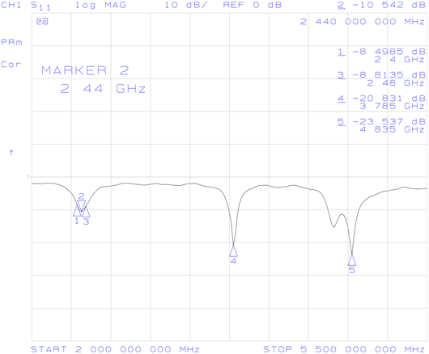

Patch Antenna
Design Goals
I have implemented antennas in products fairly often, however I've never designed one. I thought it would be a fun personal project to see what I could do. Since this wasn't an official for a company, I didn't have access to an RF chamber, full 3D simulation software, or a substrate with well controlled permittivity. I did have access to a VNA, without which designing an antenna would have been impractacle.
Given those limitations, I still wanted to see how far I could get. I chose the simplest type of antenna to start with: a patch antenna. My (fairly arbitrary) design goals were:
- Use a PCB as its main component, since they're cheap and easy to design.
- Input impedance of 50 Ω.
- Transmit 90% of the input energy (S11 ≤ -10 dB) over the ISM band (2.40 - 2.48 GHz), which is what Bluetooth and Wi-Fi use.
Substrate Choice
I've heard a few times that FR4 has a poorly controlled dielectric constant and that there are special RF grade substrates for PCBs. I wasn't looking to spend too much money on a side project, so I decided to see how far I could get with whatever the board house gave me.
Design - Version 1
I found some design equations in the textbook Antenna Theory: Analysis and Design 3rd Edition, pp 816-820, equations 14-1 to 14-7. I created a spreadsheet titled Patch Antenna Calculator to calculate them (download here), which yielded the following results:
| INPUTS | |
|---|---|
| relative dielectric constant of the substrate | 4.7 (FR-4) |
| dielectric height | 1.6 mm |
| frequency | 2.44 GHz |
| OUTPUTS | |
|---|---|
| width | 36.415 mm |
| length | 28.021 mm |
These results agree with an online calculator: emtalk.com/mpacalc.
Dimensional drawing from the online calculator, linked above.
I designed a PCB with these dimensions in Altium. To feed the antenna I chose a method I'd seen in a few different places, including the above picture: connect the waveguide directly to the edge of the antenna. This turned out to be a bad idea (more on that later).
PCB Design - Version 1
The dimensions of the PCB and the ground plane were chosen somewhat arbitrarily. I'd read enough about waveguides to suspect that it should extend at least several times the thickness of the dielectric past the antenna to ensure most of the electric field lines connected to it cleanly. I went over that by quite a bit just to be safe since I wasn't imposing any size constraints on myself.
The length of the waveguide feeding the patch antenna was chosen arbitrairly, since it, the connector, and the cable supplying the signal should all be 50 Ω until the patch.
The edge connector details are:
| Digi-Key Part Number | SAM8857-ND |
| Manufacturer | Samtec Inc. |
| Manufacturer PN | SMA-J-P-H-ST-EM1 |
| Description | SMA Connector Jack, Female Socket 50Ohm Board Edge, End Launch Solder |
| price/unit @1 (Nov 25, 2019, Digi-Key) |
$4.33 |
The PCB was added to an order going to JLCPCB, so it only cost $2 to get 5 samples.
Results
Connecting the antenna to a VNA gave the following plots. Markers 1, 2, and 3 show the target frequency band. Markers 4 and 5 show unexpected resonances.
 

It can be seen that, while the antenna is resonant at 2.44 GHz (Marker 2), S11 is only around -5 dB and the input impedance is 123 + j57 Ω, which are both way too high. Surprisingly, the antenna is also resonant at 3.767 GHz and 4.66 GHz, both of which show a better S11 and input impedance than the target frequency.
The low S11 means that the energy at those two higher unexpected frequencies is disappearing into the antenna, but is it actually being radiated? The patch should be the wrong dimensions to do that well. Ideally this would be tested in an antenna chamber. Instead, I roughly tested if they were radiating by connecting antenna samples to both ports of the VNA and put them next to each other. 2.44 GHz had the highest S21 value, with the other two frequencies responding much more weakly. Since an antenna's transmit and recieve efficiency vs frequency is the same, this means that both the first antenna wasn't transmitting AND the second antenna wasn't recieving at those unwanted frequencies. The only other place that energy could be going was into antenna losses.
Again, this test wasn't nearly as rigourous as using a test chamber, but it's what I had.
So now that I had an idea what was happening, I had to figure out why.
Simulation
The next thing I did was to simulate the antenna in Keysight Genesys, yielding this S11 plot:
It's resonant at 2.46 GHz instead of 2.44 GHz. It also shows the three resonant dips at roughly the same frequencies, although the higher frequency results differ wildly.
Researching Further
Searching online for answers led to the Antenna Theory website which had this to say:
“Previously, the patch antenna was fed at the end. Since this typically yields a high input impedance, we would like to modify the feed. Since the current is low at the ends of a half-wave patch and increases in magnitude toward the center, the input impedance (Z=V/I) could be reduced if the patch was fed closer to the center."
Also, from here:
- The length of the patch L controls the resonant frequency
- Increasing the height of the substrate increases the bandwidth
- The width W controls the input impedance and the radiation pattern (wider = lower input impedance)
Based on this information, I decided that a better way to feed the antenna was needed. Once again, antenna-theory.com had some good information, showing two promising methods: Inset Feed and Coaxial Cable Feed
Inset Feed
Here the transmission line is extended into the antenna by a distance R. This method seemed less ideal to me since it disrupts the geometry of the patch and I suspect that having the patch adjacent to the waveguide for the distance R would affect its impedance. One unanswered question was how wide those slots that are cut into the patch should be.
I could have played around in the simulation to find potential dimensions, but Antenna Theory suggested a second feed method that seemed better.
Coaxial Cable Feed
Here a coax cable is stripped back in such a way that the outer conductor stops at the ground plane and the central conductor continues up to connect to the patch. The inner insulator ideally extends at least partway into the substrate in order to stop the inner conductor from contacting the ground plane.
This method doesn't disrupt the geometry of the patch and there were no unexplained dimensions. It was also easier to test by drilling a hole in one of my samples as opposed to trying to cut away copper precisely. The only dimension I had to determine was the feed point inset distance R.
Finding the Feed Location
Antenna Theory gave an equation for the antenna input impeance as a function of the feed point inset distance R. It's explained here.
$$Z_{in}(R)=\cos^2(\pi \frac{R}{L})Z_{in}(0)$$Noting that the desired Zin is 50Ω and rearranging a bit:
$$\frac{50\Omega}{Z_{in}(0)}=\cos^2(\pi \frac{R}{L})$$Let's think about this equation a bit. Looking at the R/L term, R will never be larger than L, so
R/L ≤ 1.
Here's a graph of cos2(πx) from x = 0 to 1.
You can see that cos2(πx) will never be larger than 1. Therefore we can write:
$$\frac{50\Omega}{Z_{in}(0)}=[0..1]$$In other words, Zin(0) will be between 50 and infinity ohms and have no imaginary component.
In order to find the correct value of R I need to measure Zin(0), divide 50 by it, and then find what value of R gives that same value to make both sides of this equation equal.
$$\frac{50\Omega}{Z_{in}(0)}=\cos^2(\pi \frac{R}{L})$$
In order to measure Zin(0) I removed the waveguide from one of my antenna samples, drilled a hole at the edge of the patch, and soldered on a coax cable.
The available drill bits were a bit larger than I would have liked, so I tried to compensate for the hole in the ground plane by soldering the coax ground around its entire perimeter.

The VNA plots looked like this:
Looking at the smith chart, the impedance at 2.44GHz is 87.367 - j10.984 Ω. In other words,
Zin(0) = 87.367 - j10.984 Ω.
This gave me a bit of pause. The previous analysis of the above equation indicated that Zin(0) should be real, not complex. Was this just measurement error? Was this from calibrating the VNA at the wrong location? Was this caused by the little bit of coax center conductor that goes through the substrate for a bit before getting to the patch?
At this point I was kind of out of my depth but decided to move forwards anyways to see how far I could get. The worst thing that could happen was wasting a few hours and a small amount of money. If I was doing this project for an employer I would have been trying to get some feedback from a more senior designer.
I decieded to just ignore the imaginary part of Zin(0). I maybe should have taken the magnitude (88.05 Ω), but it and the real part were very close enough and at this point I'd lost any claim to precision due to the drilling.
So, taking Zin(0) = 87.367 (and L = 28.021 mm), the equation becomes:
$$\frac{50\Omega}{87.367\Omega}=0.5723=\cos^2(\frac{\pi R}{28.021 mm})$$Drawing a line at 0.5723 across our graph of cos2(πx) show that there's two values of x that give a value of cos2(πx) = 0.5723. For a coaxial cable feed they're the same since they would result in the same antenna, just mirrored. The solution we'll use is x = 0.2269.
So now we just need to solve x = 0.2269 = R/L for R to find the feed location. L = 28.021, so R = 6.36 mm.
In order to roughly test this, I took another antenna sample, removed the wave guide, then drilled a hole as precisely as I could 6.36 mm from the edge of the patch antenna.
It wasn't as precise as I'd like, but it did give these results. Markers 1 and 3 show the target frequency range.
I was very suprised at how much the performance improved. S11 had a minimum of -31 dB in the region I was targeting (at 2.412 GHz), which was great. The input impedance at 2.412 GHz was 52.47 + j1.39 Ω, close enough to 50Ω to make me happy.
What wasn't great was that at the upper end of the frequency range, S11 was only -5.7dB. Ideally the entire S11 curve would shift over and flatten out a bit in order to be below -10dB over the entire range.
To do that the patch should be made shorter (decrease L) to increase its resonant frequency and its thickness should be increased in order to increase the bandwidth.
Future Work
With this result I was happy to declare the first version of the antenna a partial success. I felt like I had learned enough to be able to modify the design in order to fix its remaining issues.
In the future, if I ever get access to a VNA again, I'd like to make a second version of this project and try to meet all the design goals.